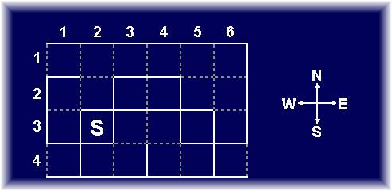

<!DOCTYPE HTML PUBLIC "-//W3C//DTD HTML 4.0 Transitional//EN">
<html xmlns:v="urn:schemas-microsoft-com:vml"
xmlns:o="urn:schemas-microsoft-com:office:office"
xmlns:w="urn:schemas-microsoft-com:office:word"
xmlns="http://www.w3.org/TR/REC-html40">

<head>
<meta http-equiv=Content-Type content="text/html; charset=windows-1252">
<meta name=ProgId content=Word.Document>
<meta name=Generator content="Microsoft Word 10">
<meta name=Originator content="Microsoft Word 10">
<link rel=File-List href="p6_files/filelist.xml">
<link rel=Edit-Time-Data href="p6_files/editdata.mso">
<!--[if !mso]>
<style>
v\:* {behavior:url(#default#VML);}
o\:* {behavior:url(#default#VML);}
w\:* {behavior:url(#default#VML);}
.shape {behavior:url(#default#VML);}
</style>
<![endif]-->
<title>Problem E - World Finals Warmup (Oriental) Contest</title>
<!--[if gte mso 9]><xml>
 <o:DocumentProperties>
  <o:Author>Administrator</o:Author>
  <o:LastAuthor>Shahriar Manzoor</o:LastAuthor>
  <o:Revision>10</o:Revision>
  <o:TotalTime>452</o:TotalTime>
  <o:LastPrinted>2002-02-25T12:32:00Z</o:LastPrinted>
  <o:Created>2002-10-21T10:23:00Z</o:Created>
  <o:LastSaved>2002-10-24T04:45:00Z</o:LastSaved>
  <o:Pages>1</o:Pages>
  <o:Words>321</o:Words>
  <o:Characters>1830</o:Characters>
  <o:Company>BUET</o:Company>
  <o:Lines>15</o:Lines>
  <o:Paragraphs>4</o:Paragraphs>
  <o:CharactersWithSpaces>2147</o:CharactersWithSpaces>
  <o:Version>10.2625</o:Version>
 </o:DocumentProperties>
</xml><![endif]--><!--[if gte mso 9]><xml>
 <w:WordDocument>
  <w:View>Print</w:View>
  <w:Zoom>BestFit</w:Zoom>
  <w:SpellingState>Clean</w:SpellingState>
  <w:GrammarState>Clean</w:GrammarState>
  <w:BrowserLevel>MicrosoftInternetExplorer4</w:BrowserLevel>
 </w:WordDocument>
</xml><![endif]-->
<style>
<!--
 /* Style Definitions */
 p.MsoNormal, li.MsoNormal, div.MsoNormal
	{mso-style-parent:"";
	margin:0in;
	margin-bottom:.0001pt;
	mso-pagination:widow-orphan;
	font-size:12.0pt;
	font-family:"Times New Roman";
	mso-fareast-font-family:"Times New Roman";}
a:link, span.MsoHyperlink
	{color:blue;
	text-decoration:underline;
	text-underline:single;}
a:visited, span.MsoHyperlinkFollowed
	{color:purple;
	text-decoration:underline;
	text-underline:single;}
p
	{mso-margin-top-alt:auto;
	margin-right:0in;
	mso-margin-bottom-alt:auto;
	margin-left:0in;
	mso-pagination:widow-orphan;
	font-size:12.0pt;
	font-family:"Times New Roman";
	mso-fareast-font-family:"Times New Roman";}
pre
	{margin:0in;
	margin-bottom:.0001pt;
	mso-pagination:widow-orphan;
	tab-stops:45.8pt 91.6pt 137.4pt 183.2pt 229.0pt 274.8pt 320.6pt 366.4pt 412.2pt 458.0pt 503.8pt 549.6pt 595.4pt 641.2pt 687.0pt 732.8pt;
	font-size:10.0pt;
	font-family:"Courier New";
	mso-fareast-font-family:"Courier New";}
tt
	{font-family:"Courier New";
	mso-ascii-font-family:"Courier New";
	mso-fareast-font-family:"Courier New";
	mso-hansi-font-family:"Courier New";
	mso-bidi-font-family:"Courier New";}
@page Section1
	{size:8.5in 11.0in;
	margin:1.0in 1.0in 1.0in 1.0in;
	mso-header-margin:.5in;
	mso-footer-margin:.5in;
	mso-paper-source:0;}
div.Section1
	{page:Section1;}
-->
</style>
<!--[if gte mso 10]>
<style>
 /* Style Definitions */
 table.MsoNormalTable
	{mso-style-name:"Table Normal";
	mso-tstyle-rowband-size:0;
	mso-tstyle-colband-size:0;
	mso-style-noshow:yes;
	mso-style-parent:"";
	mso-padding-alt:0in 5.4pt 0in 5.4pt;
	mso-para-margin:0in;
	mso-para-margin-bottom:.0001pt;
	mso-pagination:widow-orphan;
	font-size:10.0pt;
	font-family:"Times New Roman";}
</style>
<![endif]--><!--[if gte mso 9]><xml>
 <o:shapedefaults v:ext="edit" spidmax="13314"/>
</xml><![endif]--><!--[if gte mso 9]><xml>
 <o:shapelayout v:ext="edit">
  <o:idmap v:ext="edit" data="1"/>
 </o:shapelayout></xml><![endif]-->
</head>

<body>

<p class=MsoNormal align=center style='text-align:center'><b><span
style='font-size:18.0pt'>Problem G</span></b><br>
<b><span style='font-size:24.0pt'>The Wall Pushers</span></b><br>
<b>Input:</b> standard input<br>
<b>Output:</b> standard output<br>
<b>Time Limit:</b> 8 seconds<br style='mso-special-character:line-break'>
<![if !supportLineBreakNewLine]><br style='mso-special-character:line-break'>
<![endif]><span style='mso-bidi-font-weight:bold'><o:p></o:p></span></p>
<center></center>

<p class=MsoNormal align=center style='text-align:center'><i>Find the shortest
path from the start position (S) to any of the exits</i><span style='mso-bidi-font-weight:
bold'><o:p></o:p></span></p>

<p style='text-align:justify'>The figure above shows a maze with three exits.
You are allowed to move between two squares within the maze if they are
adjacent and 1) there is no wall separating the squares or 2) there is an inner
wall between the squares, which may be pushed in the direction of movement. A
wall can be pushed if there is no wall behind it. Notice that it's not allowed
to push any wall that lies on the boundary of the maze. </p>

<p style='text-align:justify'>From the start position (S) in the figure above,
it's possible to move north or east, but not west or south. If moving north,
the wall between the squares (2, 3) and (2, 2) will be moved to the position
between the squares (2, 2) and (2, 1). At this new position, it's not possible
to move north again because there is a wall north of (2, 1). </p>

<p style='text-align:justify'>Write a program that finds the shortest path from
a given start position to any of the exits. You may assume there exists at
least one solution for each maze. </p>

<p class=MsoNormal><b><span style='font-size:18.0pt'>Input</span></b></p>

<p style='text-align:justify'>The input file may contain several mazes to
solve. Each maze description starts with a single line containing two integers <var><span
style='mso-fareast-font-family:"Courier New"'>x</span></var> and <var><span
style='mso-fareast-font-family:"Courier New"'>y</span></var> (1&lt;=<var><span
style='mso-fareast-font-family:"Courier New"'>x</span></var>&lt;=6, 1&lt;=<var><span
style='mso-fareast-font-family:"Courier New"'>y</span></var>&lt;=4) which is
the start position in the maze. Next follows four lines with six integers each.
These integers <var><span style='mso-fareast-font-family:"Courier New"'>p</span></var>
(0&lt;=<var><span style='mso-fareast-font-family:"Courier New"'>p</span></var>&lt;=15)
describe each square in the maze in the following way: <var><span
style='mso-fareast-font-family:"Courier New"'>p</span></var> is the sum of 1
(if there is a wall west of the square), 2 (north), 4 (east) and 8 (south).
Each inner wall will thus be mentioned twice. Each opening in the boundary is
considered an exit. </p>

<p style='text-align:justify'>The input ends with a maze with starting
coordinates 0, 0 and should not be processed. </p>

<p class=MsoNormal><b><span style='font-size:18.0pt'>Output</span></b></p>

<p class=MsoNormal style='text-align:justify'>Output a single line for each
maze with the description of a path with minimum length that leads to any of
exits. Use the letters 'N', 'S', 'E' and 'W' to denote north, south, east and
west, respectively. If there are several solutions with minimum length, display
any one of them.</p>

<p class=MsoNormal><span style='mso-bidi-font-weight:bold'><o:p>&nbsp;</o:p></span></p>

<pre><b><span style='font-size:18.0pt;font-family:"Times New Roman"'>Sample Input</span></b><br>
<span style='font-size:11.0pt;mso-fareast-font-family:"Times New Roman"'>2 3<o:p></o:p></span></pre>

<p class=MsoNormal style='tab-stops:45.8pt 91.6pt 137.4pt 183.2pt 229.0pt 274.8pt 320.6pt 366.4pt 412.2pt 458.0pt 503.8pt 549.6pt 595.4pt 641.2pt 687.0pt 732.8pt'><span
style='font-size:11.0pt;font-family:"Courier New"'>10 2 10 10 2 6<o:p></o:p></span></p>

<p class=MsoNormal style='tab-stops:45.8pt 91.6pt 137.4pt 183.2pt 229.0pt 274.8pt 320.6pt 366.4pt 412.2pt 458.0pt 503.8pt 549.6pt 595.4pt 641.2pt 687.0pt 732.8pt'><span
style='font-size:11.0pt;font-family:"Courier New"'>3 12 11 14 9 4<o:p></o:p></span></p>

<p class=MsoNormal style='tab-stops:45.8pt 91.6pt 137.4pt 183.2pt 229.0pt 274.8pt 320.6pt 366.4pt 412.2pt 458.0pt 503.8pt 549.6pt 595.4pt 641.2pt 687.0pt 732.8pt'><span
style='font-size:11.0pt;font-family:"Courier New"'>13 15 3 6 15 13<o:p></o:p></span></p>

<p class=MsoNormal style='tab-stops:45.8pt 91.6pt 137.4pt 183.2pt 229.0pt 274.8pt 320.6pt 366.4pt 412.2pt 458.0pt 503.8pt 549.6pt 595.4pt 641.2pt 687.0pt 732.8pt'><span
style='font-size:11.0pt;font-family:"Courier New"'>14 11 12 9 14 11<o:p></o:p></span></p>

<p class=MsoNormal style='tab-stops:45.8pt 91.6pt 137.4pt 183.2pt 229.0pt 274.8pt 320.6pt 366.4pt 412.2pt 458.0pt 503.8pt 549.6pt 595.4pt 641.2pt 687.0pt 732.8pt'><span
style='font-size:11.0pt;font-family:"Courier New"'>0 0<o:p></o:p></span></p>

<pre><o:p>&nbsp;</o:p></pre><pre><b style='mso-bidi-font-weight:normal'><span
style='font-size:18.0pt;font-family:"Times New Roman"'>Sample Output</span></b><br>
<span style='font-size:11.0pt;mso-fareast-font-family:"Times New Roman"'>
NESESEENNWNWWWWW<o:p></o:p></span></pre>

<div class=MsoNormal align=center style='text-align:center;tab-stops:45.8pt 91.6pt 137.4pt 183.2pt 229.0pt 274.8pt 320.6pt 366.4pt 412.2pt 458.0pt 503.8pt 549.6pt 595.4pt 641.2pt 687.0pt 732.8pt'>

<hr size=2 width="100%" align=center>

</div>
<b>
<font size =3 face="Times New Roman, Ariel, Helvetica">
(Regionals 2002 Warm-up Contest, Problem setter: Jimmy Mårdell)
</font></b>
<p class=MsoNormal style='margin-bottom:12.0pt;tab-stops:45.8pt 91.6pt 137.4pt 183.2pt 229.0pt 274.8pt 320.6pt 366.4pt 412.2pt 458.0pt 503.8pt 549.6pt 595.4pt 641.2pt 687.0pt 732.8pt'><o:p>&nbsp;</o:p></p>

</div>

</body>

</html>
